Das Kopfschmerztagebuch fürs iPhone. In wenigen Sekunden erfasst.
iPhone ab iOS 18 · Tagebuch kostenlos · Grindweh Pro einmalig CHF 5
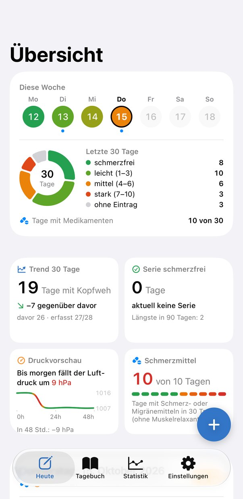
Auf Schweizerdeutsch heisst der Kopf Grind. Tut er weh, hat man Grindweh.
Kopfschmerzen begleiten mich seit Jahren und immer blieb dieselbe Frage: Liegt es am Wetter, an den Verspannungen, am Sport, am Schlaf oder am Glas Weisswein vom Vorabend? Ein Tagebuch, das mir darauf eine Antwort gibt, habe ich nicht gefunden. Also habe ich es gebaut.
Morgen, Mittag, Abend: Schmerzstärke einstellen, fertig. Hast du es vergessen, erinnert dich Grindweh.
30 Tage Rückblick. Wie viele Tage in Folge ohne Kopfschmerzen? Wie oft Schmerzmittel? Das siehst du auf einen Blick.
Mit jedem Eintrag wird das Bild klarer und ein Muster entsteht. Grindweh zeigt dir, was mit deinen Kopfschmerzen zusammenhängt.
Pro Tageszeit ein Wert von 0 bis 10, dazu deine Medikamente. Mehr braucht es nicht. Wer will, hält auch Schlaf, Stress, Koffein, Sport und alles andere fest, was eine Rolle spielen könnte.
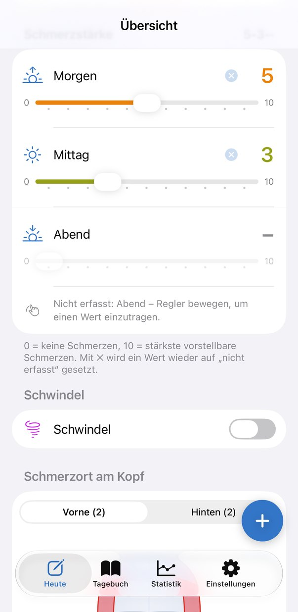
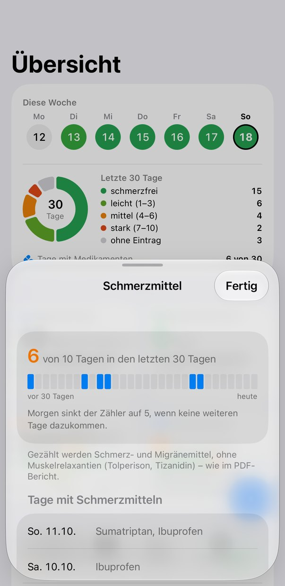
Tippe auf der Kopfgrafik an, wo es schmerzt, und auf der Körpergrafik, wo du Spannungen wahrnimmst: Hals, Schultern, Rücken. Grindweh merkt sich, welche Zonen an Kopfschmerztagen immer wieder auftauchen. Im «Expertenmodus Verspannungen» gibst du sogar die Stärke pro Muskel an.
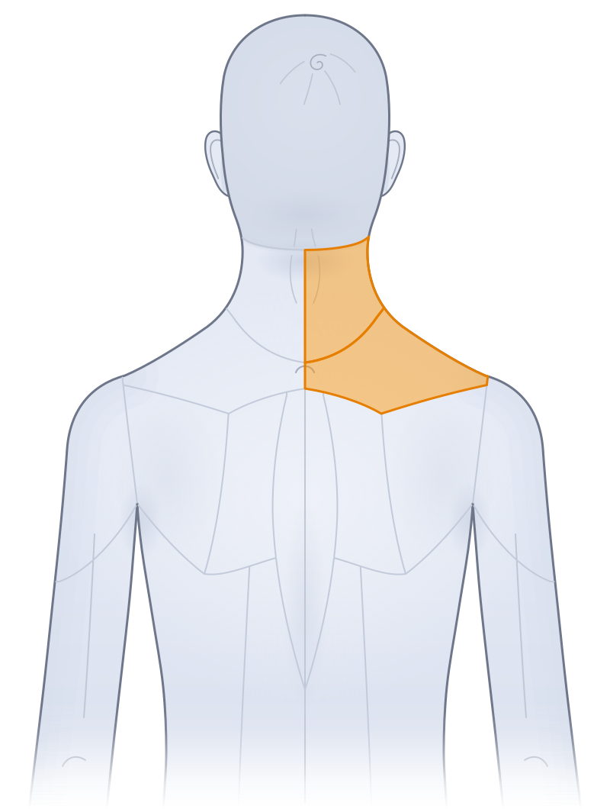
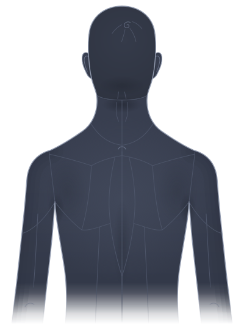
Fällt der Luftdruck, bevor es losgeht? Trifft es dich vor allem montags? Nach kurzen Nächten? Die Muster zeigen dir, was auffällt: Druck, Verspannung, Tageszeit, Wochentag, Schlaf und Training. Zusammenhänge, keine Ursachen. Aber ein guter Anfang für das nächste Gespräch mit deiner Ärztin oder deinem Physio.
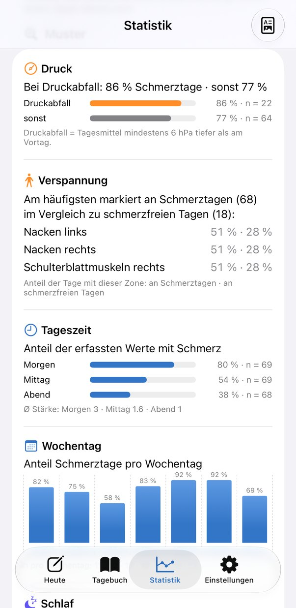
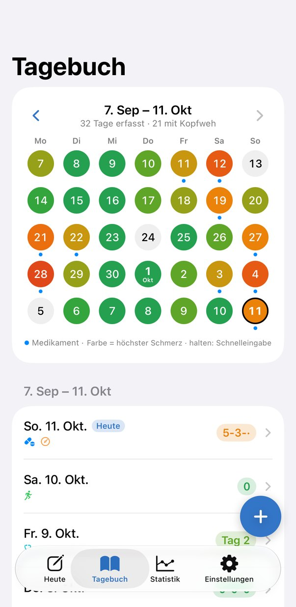
Wer an 10 oder mehr Tagen im Monat Schmerzmittel nimmt, riskiert Kopfschmerzen durch die Medikamente selbst. Grindweh zählt mit und zeigt dir, wo du stehst.
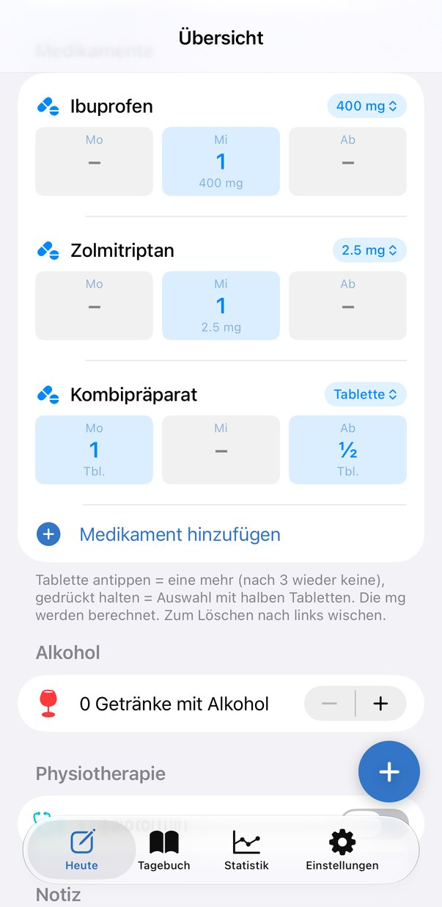
Grindweh holt Wetter und Luftdruck automatisch dazu. Die Druckvorschau warnt dich, wenn der Luftdruck fällt, oft bevor die Schmerzen starten.
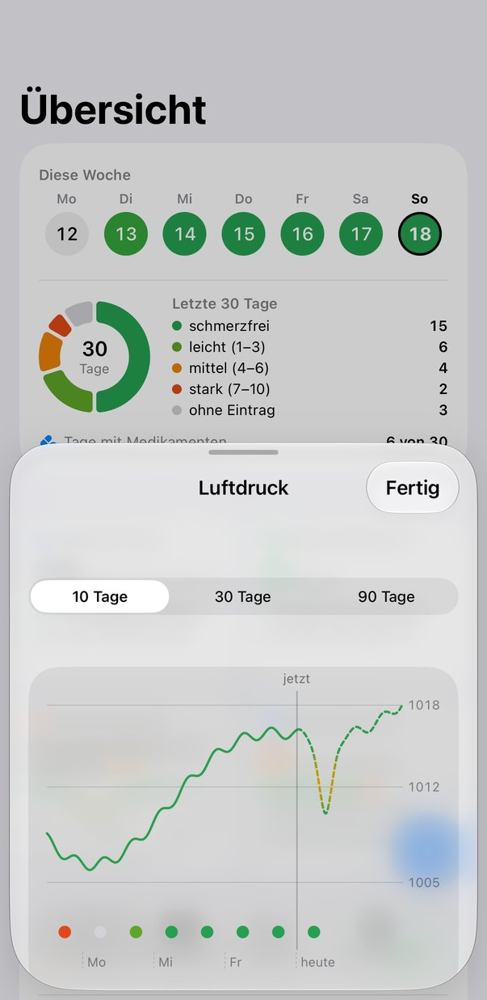
Verbinde Grindweh mit Apple Health, und Schlaf, Schritte, Ruhepuls und Trainings fliessen direkt in deine Muster ein. Du gibst jeden Datentyp einzeln frei.
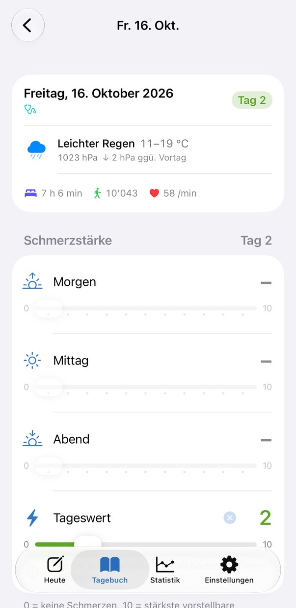
Koffein ist dir egal, Bildschirmzeit nicht? Schalte jeden der 15 Bereiche einzeln ein oder aus. Ausgeschaltet heisst nur ausgeblendet, nichts geht verloren. Und was fehlt, ergänzt du mit eigenen Feldern.
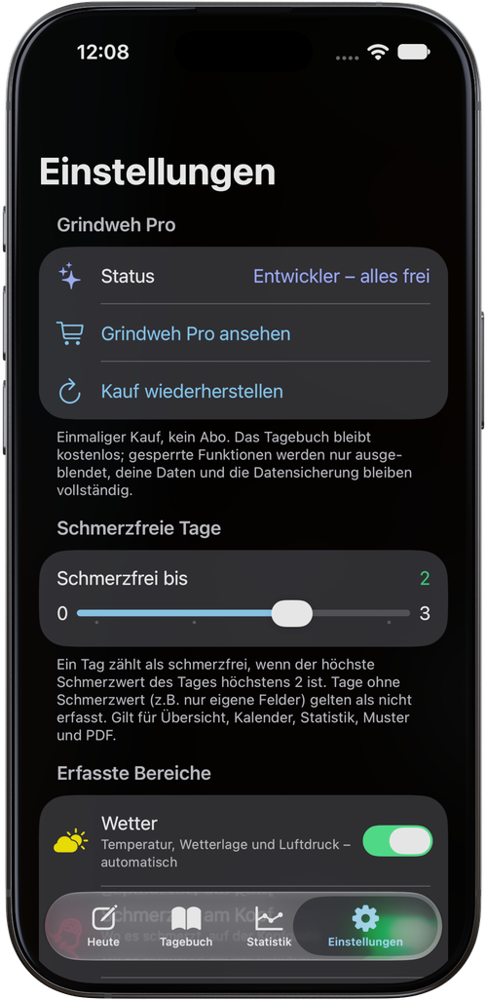
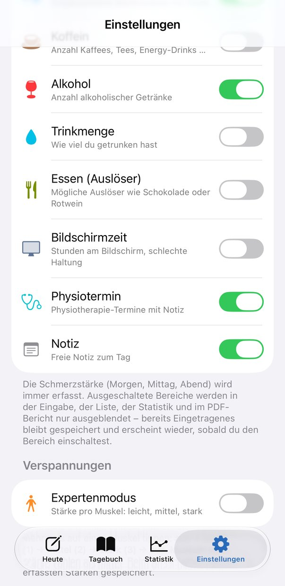
Dein Monat auf einer A4-Seite, bereit für die Arztpraxis.
Dein Tag und deine Woche auf dem Home-Bildschirm.
Auf Wunsch jede Woche automatisch.
Kein Konto, kein eigener Server, keine Werbung, kein Tracking. Gesundheitsdaten sind privat, darum verlassen sie dein iPhone nicht. Wetter und Luftdruck kommen von Apple, Apple Health nutzt du nur, wenn du es freigibst.
Das Tagebuch ist kostenlos, ohne Ablaufdatum. Grindweh Pro kostet einmalig CHF 5 und lässt sich 14 Tage gratis testen.
Schmerzstärke, Medikamente, alle Bereiche, Schmerzzonen und Verspannungszonen, Serie schmerzfrei, Schmerzmittel, Erinnerung, Datensicherung, 1 eigenes Feld.
Alles aus Grindweh, dazu Muster und Statistik, PDF-Bericht, Wetter und Luftdruck, Apple Health, Expertenmodus Verspannungen, Widget und beliebig viele eigene Felder.
Nach der Probezeit werden die Pro-Funktionen ausgeblendet. Deine Daten bleiben vollständig erhalten.
Bald. Grindweh ist gerade im Test. Trag dich unten ein, und du erfährst es als Erstes.
Nein. Einfach installieren und loslegen.
Das Tagebuch läuft kostenlos weiter. Die Pro-Funktionen pausieren, bis du Grindweh Pro kaufst. Es geht nichts verloren.
Nein. Grindweh hilft dir, deine Kopfschmerzen festzuhalten und Termine gut vorzubereiten. Diagnose und Behandlung bleiben Sache von Fachleuten.
Zum Start Deutsch. Englisch, Französisch und Italienisch folgen.
Nein, Grindweh ist fürs iPhone gemacht.
Schreib an support@grindweh.app.